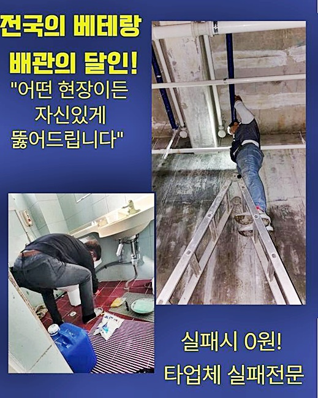
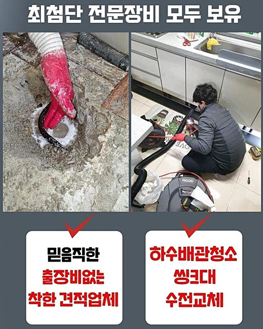
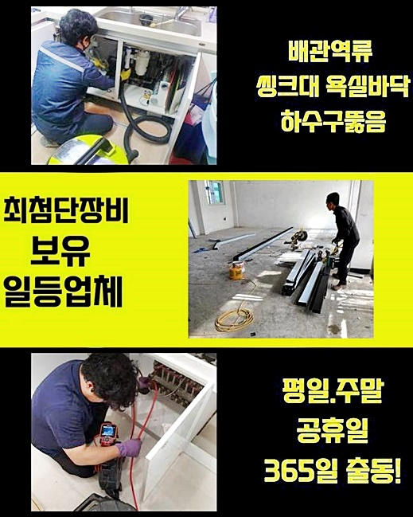
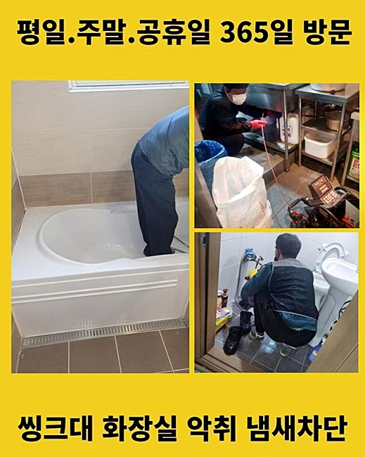
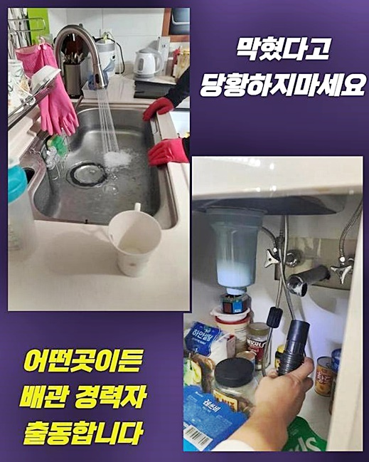
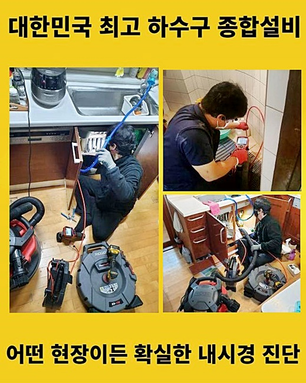

🏠 종로 사간동오수관뚫음 구기동 하수구청소장비 배관뚫는업체
용인 하수구막힘 전문 시공 후기

📋 작업 개요
- 위치: 용인
- 서비스 유형: 하수구막힘, 배관막힘, 누수수리, 뚫는업체, 배관청소, 고압세척
- 작업 일시: 2024. 7. 5. 9:51
- 업체명: 하수구수사대 (010-5615-2118)
🔍 문제 상황
종로 사간동오수관뚫음 구기동 하수구청소장비 배관뚫는업체
배관막힘을 확고하게 바로잡아드리는 배관설비업체에요
오늘포스팅에서는 어디서나 중요시되는 하수구와 관련하여 알려드리겠습니다
작업했던 내용을 토대로 배관막힘과 연관하여 알아보도록 해봐요!
막히는현상을 해결하고자 하신다면 전문적인 저희업체에서 작성하게된 오늘글이 많은도움을 받으실겁니다
화장실하수구가 막혀서 곤란함을 느끼신 고객의 가정으로 방문드렸어요
며칠전부터 물이느린상태로 흘러가기 시작했더니 결국에는 막히는일이생겨 흘러가지않았다고 하셨습니다
막힌배관을 해결하고자 최첨단식의 기계를 준비하여 고객분의 가정으로 내방해드렸죠
방문드린후에는 욕실쪽부터 살펴보았죠
배관덮개를 들어낸후 내부의상황을 들여다보았어요
배수구입구주위에 물이차있었죠
약간의물을 빠지게해봤지만 확실히 빠지지못하고 물이넘쳐버린 상황이었죠
일단은 막힌물을 흡입해주기로 했습니다 청소기와 비슷한 역할을하고있는 석션도구를 사용했죠
배수구안속에 적은찌꺼기 때문에 단순히 막힌경우에는 석션기계로 빨아들이는것으로 하수구막힘 현상이 처리될수있어요

🔎 원인 분석
💡 전문가 진단: 정밀 진단 장비를 사용하여 슬러지의 고착 여부를 판명하고 타격/세척 작업을 실시했습니다.
오물을 흡입해보았지만 원인이되는 고착물은 제거가되지 못했답니다 오늘작업장소는 가볍게막힌것이 아니었네요
내부속에 고착되어있는 오염물로인해 막혔다는것이 확실했답니다 그렇기에 배관내부쪽을 파악해보기로했죠
배수구안속을 살피는 전문기계를 투입하기위해선 넘쳐버린물을 제거해줘야해요
다시한번 흡입기로 하수구내부의 물을흡입했습니다 물이빠지고나서 하수관내시경을 투입하게되었죠
하수구cctv는 긴관쪽끝에 소형카메라기가 달린장비에요
두눈만을 가지고는 확인이불가한 하수도내부의 모습을 모니터화면으로 확인하게끔 해주는기기죠
배관카메라를 활용해서 점검해봤죠 입구쪽부터 다량의 석회물이 퇴적되어있는것이 보였는데요
굳은이물이 끼었다는것은 오랜시간내내 침수상태라는 의미인데요
시간이흘러 단단히 굳어지는 고착물질은 바위처럼 딱딱해서 제거가어렵죠
카메라기기를 깊숙히 투입해서 내부속까지 점검해보았죠
머리카락과 각종이물이 접착되어 자리잡고있었어요 배관안속의 구부러진부분에서는 잔여물이 뭉친채 층을이뤘어요
신속하게 잔해물질을 제거하여 배관세척을 진행해야하는 긴박한 상황이랍니다
딱딱한오염물을 과도한 작업으로 제거하게되면 하수구파이프에 피해를줄수있죠
하수도가 깨지게되면 누수현상이 발현되는등 2차적인 문제들로 이어질수있어요
화학적으로 진행하기로 했는데요

🔧 작업 과정
고착물을 녹이게하는 하수구클리너를 사용해보았죠 거품이발생하며 배관안에 쌓여버린 석회가 녹기시작했죠
시간이지날수록 석회가 부드러워진다면 분쇄작업을통해 제거할수있어요
중화가 완료되고나서 세척과정을 이어나갔죠
플렉스샤프트기를 이용해서 작업하기로했죠 샤프트장비는 노즐끝쪽에 쇠사슬이연결된 장비랍니다
모터를작동시키면 사슬이돌게되는데 회전력이 발생하며 덩어리이물이 잘게분쇄되요
녹은석회물과 잔여물질들을 갈아서 빨아올릴수있게끔 진행했답니다
분쇄기기를 활용할경우 이물분쇄와 함께 하수구청소가 가능하답니다
쇠사슬이돌아갈때 사슬의범위를 조절해서 회전범위를 조정할수있죠
하수구가 크든작든 크기에맞춰서 배관벽을 긁을수있기에 깔끔한작업이 이루어진답니다
깊숙하게 자리잡고있는 이물까지 꼼꼼히 작업하였죠
이물제거작업시 중간중간마다 내시경기계를 함께 투입했어요
카메라장비로 하수구안을 살펴보면서 오염물이 쌓여있는곳을 집중해서 작업하기로 했는데요
작업중간에 물을배수구에 흘려보내면서 분쇄가 잘되도록 만들어주었는데요
상당한양의 오염물이 있었기에 단번의 청소로는 해결되지못했죠
카메라장비와 분쇄도구를 차례에맞게 사용해가며 반복과정을 착수해주었죠
화장실배수구의 경우엔 머리를감거나 청소를하게될때 흙과 머리카락같은게 배수구안으로 들어가기 쉽다고할수있죠
하수구거름망 같은것을 설치해서 작은덩어리가 유입될수없게끔 촘촘히 막아주는게 좋답니다
분쇄한 오염물들을 물이랑함께 빨아올려 제거해주었어요
꿀렁거리는 소리가발생하며 잔여물이 제거되었습니다 석션통에 모아보니 굉장히 많은양이었죠
청소작업과 분쇄작업을 모두마무리하고 한번더 내시경장비로 확인해보았는데요
퇴적되었던 석회물들이 깔끔히 소거되었죠 내부의 기름슬러지도 보이지않았죠
하수구내벽이 깔끔하게 변화된걸 볼수있었죠 철수전 고객님과같이 배수상태를 체크해봤어요
물을받고서 배수관에 흘려보냈죠

✅ 작업 완료
확실하게 물이빠지는것을 파악시켜드리고서 마무리했습니다
오래된고착물이 주된원인이었던 작업장소였어요
이번현장에서 보다시피 문제해결로 이어지고자한다면 막힌이유를 살펴본뒤 그에맞도록 해결책들을 마련하는것이 중요한데요
하수구막힘이 생겼다면 여러현장의 경험들을 보유하고있는 베테랑을 탐색해보세요!
60분안으로 현장으로 도착할수있고 투명한 작업계획으로 공개하기때문에 걱정마시길 바랄게요!
저희가 출동해서 의뢰자분께서 안심하도록 첫시작부터 마무리까지 시원하게 일처리해드릴테니 염려마시고 전화주시길 바래요




⚠️ 베란다 누수 및 방수 관리 방법
- ✅ 비가 많이 올 때 창틀 주변이나 아래층 천장에 얼룩이 생기는지 정기적으로 확인해 보세요.
- ✅ 우수관 주변 실리콘 마감이 들뜨거나 깨진 틈새가 있는지 손상 여부를 수시로 체크하세요.
- ✅ 베란다 바닥 타일의 줄눈(메지)이 소실되면 그 틈으로 물이 침투하여 누수가 유발됩니다.
- ✅ 누수 의심 증상 발견 시 방치하면 아래층 손실이 커지므로 즉시 전문가의 진단을 받으십시오.
💡 핵심 정리
- 확실한 장비 작업(내시경 점검 및 샤프트 스케일링)으로 원인을 뿌리 뽑습니다.
- 작업 후 1년 이내에 동일한 부위 재발 시 100% 무상 A/S 서비스를 보장합니다.
- 서울 · 경기 · 인천 전 지역에 24시간 언제든 긴급 출동할 수 있도록 항시 대기 중입니다.
❓ 자주 묻는 질문 (FAQ)
🚨 용인 하수구막힘 문제로 고민이신가요?
정확한 원인 진단과 확실한 시공으로 재발 없는 해결을 약속드립니다.
24시간 긴급 출동 | 서울 · 경기 · 인천 전지역 | 1년 내 재발 시 무상 A/S